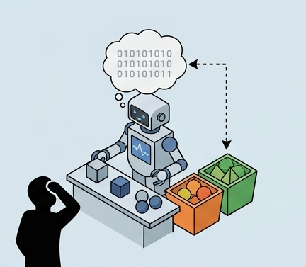
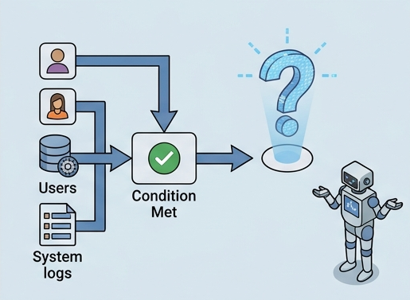
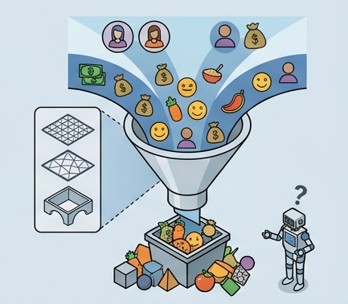
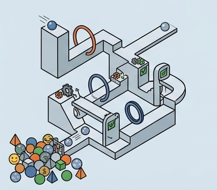
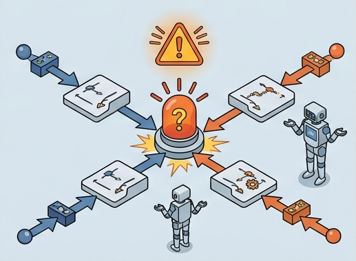
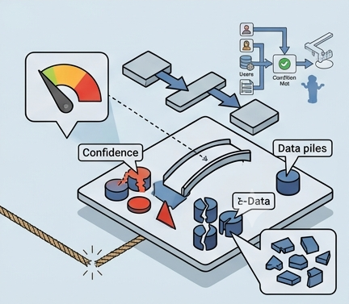

Clase 10 · Rule Forge Arena
Construye, valida y prueba la base de conocimiento de tu agente
Hoy construirán la primera mente lógica de su agente: una base de reglas que observa un caso, activa conocimiento validado con datos y explica por qué decide.
Modo de trabajo
Explora o empieza desde cero
Puedes explorar la clase con un ejemplo completo o limpiar el entorno para trabajar con tu propio dataset.
Tablero de progreso
Mapa de misiones
Usa ChatGPT, Claude o Gemini para proponer reglas. La página exige que las valides contra tu CSV antes de convertirlas en conocimiento del agente.
Misión 1
Cargar dataset y recuperar diseño
Sube o pega un CSV. La arena detecta columnas, filas, faltantes, duplicados y posibles objetivos para que diseñes el agente con evidencia.
CSV del equipo
Esperando dataset.
Diagnóstico
Vista previa del dataset
Carga un CSV para ver una muestra limitada de filas y columnas.
Misión 2
Reglas de producción
Una regla SI/ENTONCES convierte observaciones del caso en una decisión explicable. Sirve para que el agente no improvise: revisa condiciones, produce resultado y justifica.
SIclima = calor
Ygusto = dulce
ENTONCESrecomendacion = frappe
Mini constructor
Completa la regla para revisarla.
Misión 3
Cazadores de patrones
Antes de crear reglas, aprenderás a reconocer señales repetidas en tu dataset y a decidir si tienen suficiente evidencia.
Un patrón no es una regla todavía
Un patrón es una combinación de valores de entrada que aparece en el dataset y suele llevar al mismo resultado.
Un patrón no es una regla todavía. Es una señal encontrada en los datos. Si esa señal se repite y produce una salida consistente, puede convertirse en una regla candidata.
Entradaclima = calor
+gusto = dulce
Salida frecuenterecomendacion = frappe
Cómo identificar patrones
- Elegir la columna objetivo.
- Elegir variables de entrada.
- Buscar combinaciones repetidas.
- Revisar si la salida se repite.
- Clasificar el patrón.
Conceptos para evaluar
CoberturaCuántos casos cumplen la combinación.
PrecisiónPorcentaje que termina en el resultado más común.
ConfianzaLectura cualitativa para decidir si conviene usarlo.
Detector de patrones
Si no encuentras patrones claros, prueba estas estrategias:
- usa menos variables;
- cambia una variable de entrada;
- evita columnas con demasiados valores únicos;
- revisa si la columna objetivo está bien elegida;
- agrupa categorías parecidas si tiene sentido.
Mini actividad
Elige 3 patrones: 1 patrón fuerte, 1 patrón débil y 1 patrón dudoso o conflictivo. Explica cuál convertirías en regla y cuál no.
Misión 4
Forjar reglas normales
Crea mínimo 5 reglas normales con evidencia. Pueden venir de patrones detectados o de propuestas de IA validadas con tu dataset.
Editor de regla
Agrega condiciones y resultado.
Reglas normales 0/5
Misión 5
Reglas de excepción
Una excepción tiene mayor prioridad porque cubre casos raros, riesgosos o críticos donde la regla normal no basta.
Meta de excepciones
Usa el mismo editor de reglas, cambia el tipo a excepcion y prioridad alta si el caso debe imponerse sobre reglas normales.
Crea mínimo 2 excepciones. La página revisará si parecen excepciones o reglas normales.
Misión 6
Regla de respaldo
La regla de respaldo evita que el agente invente. Si ninguna regla aplica, pide datos mínimos o declara incertidumbre.
El respaldo todavía no está definido.
Misión 7
Agent Arena
Crea un caso nuevo, ejecuta las reglas y revisa regla activada, resultado, explicación, ausencia de regla o conflictos.
Caso nuevo
Esperando caso.
Historial de pruebas 0/5
Misión 8
Debug de conocimiento
Revisa, entiende y mejora la base de conocimiento de tu agente antes de exportarla.
Revisa, entiende y mejora la base de conocimiento de tu agente
Una base de conocimiento no está terminada cuando escribes reglas. Está terminada cuando esas reglas pueden ser entendidas, probadas, corregidas y explicadas. En esta misión vas a revisar la calidad de tus reglas para detectar errores antes de que el agente las use con casos reales.
¿Qué es debug de conocimiento?
Debuggear conocimiento significa revisar las reglas de un agente para encontrar problemas lógicos, vacíos, contradicciones o decisiones poco confiables.
¿Para qué sirve?
- Evita que el agente recomiende sin suficiente información.
- Detecta reglas demasiado generales o específicas.
- Encuentra contradicciones entre reglas.
- Ayuda a pedir más datos cuando no hay evidencia.
¿Por qué es importante?
Un agente basado en reglas puede parecer correcto aunque tenga errores ocultos. Una regla mal diseñada puede activarse en demasiados casos, chocar con otra regla o producir una recomendación sin justificación.
Conexión con tu proyecto
En tu agente, cada regla representa una decisión. Si una regla está mal redactada, el agente puede tomar malas decisiones. Por eso debes revisar la base antes de exportarla.

Regla sin explicación
El agente no puede explicar su razonamiento. Corrige conectando condiciones, problema y decisión.

Regla sin resultado
Detecta un caso, pero no sabe qué recomendar, clasificar, alertar o decidir.
Demasiado general
Usa muy pocas condiciones. Agrega gusto, hambre, presupuesto o tipo de usuario.

Demasiado específica
Usa tantas condiciones que casi nunca se activa. Quita lo que no sea necesario.

Posible conflicto
Dos reglas pueden activarse juntas y producir resultados distintos. Usa prioridad o excepción.

Sin confianza
No indica si representa un patrón fuerte, medio o débil.

Sin evidencia
Suena lógica, pero no se validó con patrones, cobertura o revisión en Colab.
Analizador de calidad
Tu reto de debug
Resuelve al menos una regla sin explicación o débil, una regla demasiado general o específica, y un posible conflicto o regla sin confianza.
Tu reflexión aparecerá en el reporte final.
Misión 9
Exportar
Genera una base de conocimiento en JSON y un reporte de evidencia completo para documentar tu proceso.
JSON
Reporte de evidencia
Este reporte resume lo que construiste durante la práctica. Debe reflejar tu proceso completo: dataset, patrones, reglas, pruebas, debug y reflexión final. Descárgalo y súbelo como evidencia de la Clase 10.